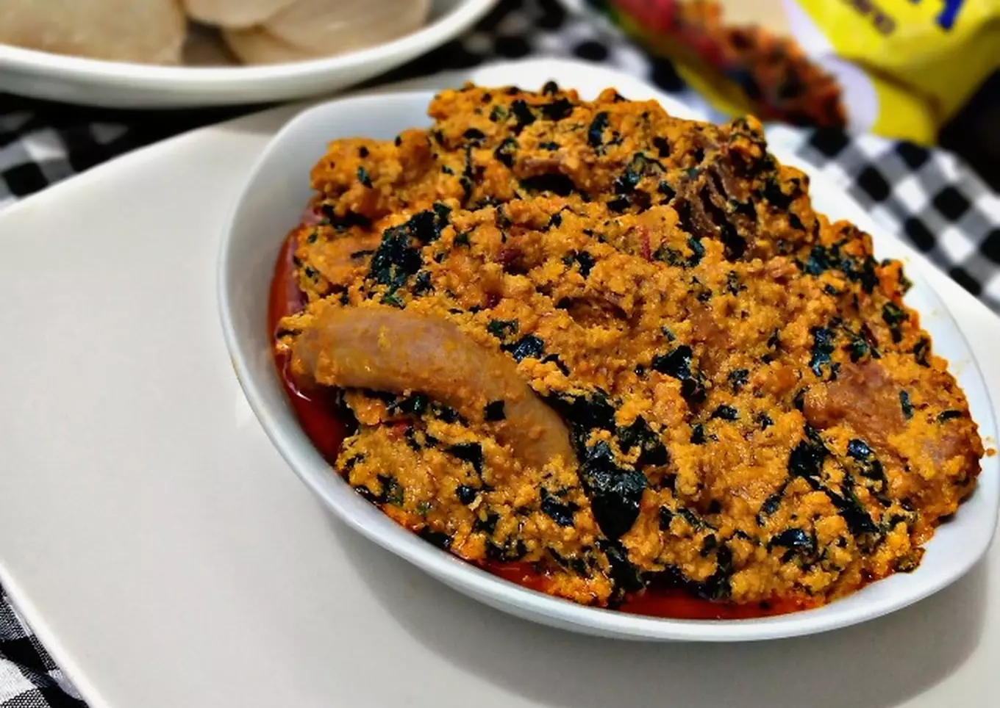

Egusi Soup

This Nigerian Egusi Soup recipe will show you how to make this popular West African soup with melon seeds.
Egusi soup is an exotic hearty food that will satisfy your taste buds.
It is a staple in most West African homes and it is an uncomplicated one-pot meal
that is often accompanied by swallows like Eba, Amala, Semovita, Pounded yam, Fufu,
and the likes. Some hardcore fan will even serve over Rice.
Ingredients
- Egusi
- Crayfish
- Assorted meat
- 2 Stock fish
- 2 Dried fish
- Pepper
- 1 large onion bulb
- Black pepper
- 4 seasoning cubes
- Salt to taste
- Palm oil
- Vegetable - ugu or uziza is preferable
- Water
Steps
- Assemble your ingredients
- Soak the stock fish in hot water for 20min
- Wash your meats and place in pot and add blended scotch bonnet mixture
- Add the stock fish and coarsely grounded black pepper, sliced onion, seasoning and salt
- Add little water and allow to simmer for 10 mins
- Pour your grounded egusi, crayfish and onion in a bowl, pour a little water and mix till combined
- On a large pot, heat the palm oil for a minute, add the blended pepper
- Scoop teaspoon size balls of the egusi paste mixture into the pot and allow to fry for 10-15 mins
- Slowly add the boiled meat and fish stock and allow to simmer for 15 mins while stirring
- Add adequate salt and seasoning to taste
- Add sliced vegetable leaf, stir and allow to simmer for 5 mins
Now you can sit back and enjoy your delicious Nigerian Egusi Soup!